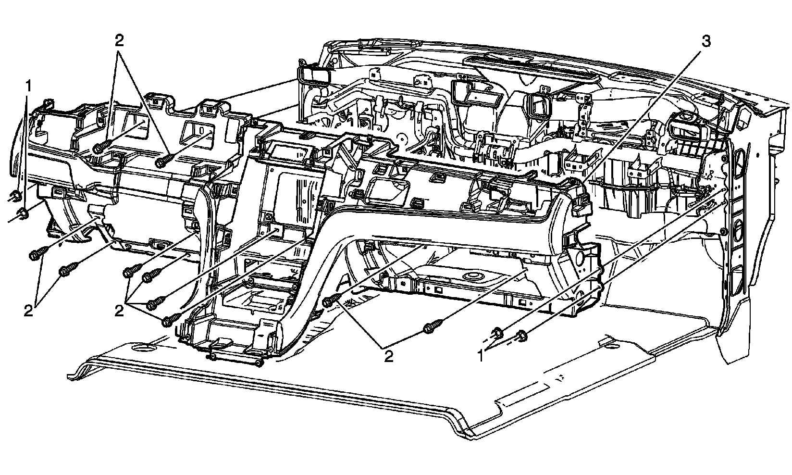
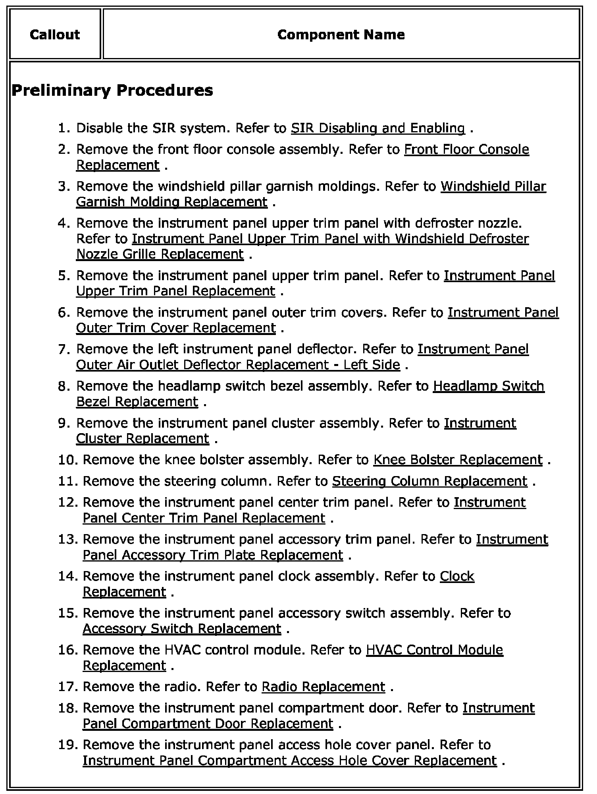
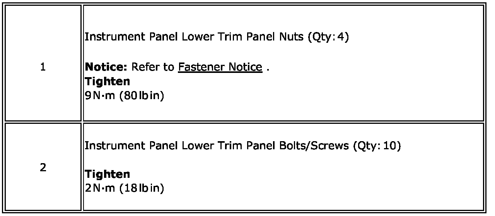

Operation CHARM
: Car repair manuals for everyone.
Home
>>
Cadillac
>>
2007
>>
Escalade ESV AWD V8-6.2L
>>
Repair and Diagnosis
>>
Body and Frame
>>
Interior Moulding / Trim
>>
Dashboard / Instrument Panel
>>
Service and Repair
>>
Instrument Panel Lower Trim Panel Replacement (Cadillac)
Instrument Panel Lower Trim Panel Replacement (Cadillac)
Instrument Panel Lower
Trim Panel
Replacement (Cadillac)
�2` :


